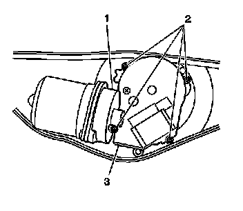

Windshield Wiper Motor Cover Replacement - Front
Windshield Wiper Motor Cover Replacement - Front
Removal Procedure

1. Remove the wiper motor module. Refer to Windshield Wiper System Module Replacement (Windshield Wiper System Module Replacement) .
2. Remove the fasteners (2) from the wiper motor cover (3).
3. Carefully remove the wiper motor cover from the wiper motor housing (1).
Installation Procedure
1. Ensure the wiper motor cover housing sealing surface is clean and dry.
2. Position the wiper motor cover (3) to the wiper motor housing.
Important: To ensure proper wiper cover seal to wiper motor housing contact, the cover fasteners need to be equally tightened to the motor housing.
3. Install the wiper motor cover fasteners (2).
Notice: Refer to Fastener Notice (Fastener Notice) .
4. Tighten the fasteners in an "X" pattern as follows:
1. Tighten the fasteners on the first pass to 0.67 N.m (6 lb in).
2. Tighten the fasteners on the second pass to 1.35 N.m (12 lb in).
3. Tighten the fasteners on the third and final pass to 2.0 N.m (18 lb in) to ensure equal sealing pressure is applied to the cover seal.
5. Install the wiper motor module. Refer to Windshield Wiper System Module Replacement (Windshield Wiper System Module Replacement) .